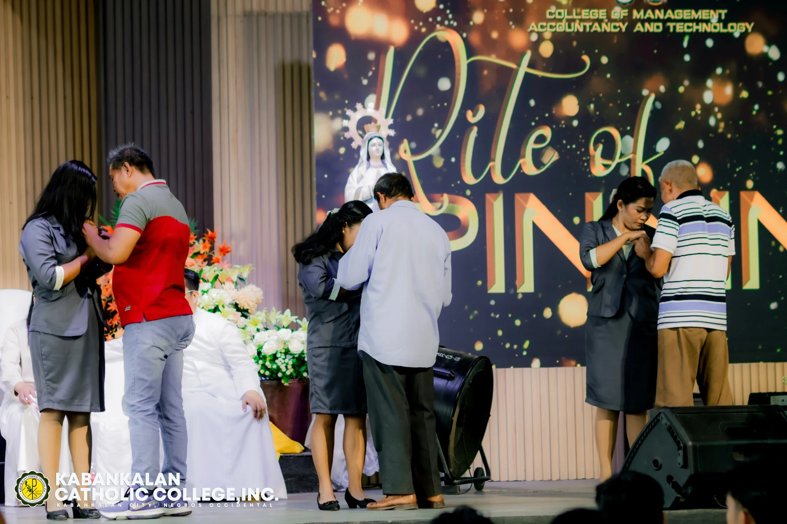

Academic Events
CMAT Pinning 2025
The Pinning Ceremony of the College of Management, Accountancy, and Technology celebrates an important achievement in the students' educational journey. It recognizes their hard work, determination, and preparation as they move closer to becoming responsible professionals and future leaders.